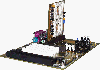
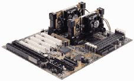

| 在多数DIY发烧友的印象中，双CPU只有在高档服务器或者工作站领域里才能看到。由于高档的CPU价格昂贵，所以双CPU或多CPU的系统，出现在家用电脑领域实在是不太可能的事情。不过，随着电脑价格的下降，玩家的DIY手段也非常超前，在赛扬卖得如火如荼的时候，有玩家就把并不支持双赛扬的主板进行技术改造，变成一套双赛扬系统。但这些对于普通玩家，只能过一过眼瘾。可喜的是现在不少厂家在市场预测方面表现得非常的前卫，看准主板的发展趋势，开始推出支持双赛扬主板，以前遥不可及的双处理器系统终于可以进入家庭用户。
一、双赛扬系统的特点
1．价格低廉。Intel推出的赛扬与PⅡ和PⅢ一样，都支持多CPU系统，由于主板的原因，早期无法实现双赛扬系统。这些经过主板厂家的改进，对双赛扬系统的支持已经不存在任何问题，赛扬的低价格、高性能的特点也充分体现出来了。采用两块赛扬的价格还不到同主频的一块PⅡ处理器，更不用和PⅢ、XEON比了。另外在性能上也大有提高，虽然不能够说是成倍的提升，但整体性能已非单处理器能相比了。
2．系统支持。现在越来越多的操作系统都支持双CPU，如：Linux、BeOS、Windows NT等等，更为重要的是Microsoft已经明确表示Windows2000将支持双CPU。如果没有操作系统的支持，双CPU系统是无法发挥作用的，更多的操作系统的支持，双赛扬系统的实用性将大为加强。
3．针对家用的主板设计。这是很重要的一点，由于一般双CPU系统主要在于高端的应用，大多被使用在服务器中，所以对主板的要求非常的高。为了保证系统的稳定、可靠，这些主板用料几乎是不计工本的，而且还设计很多一般家用电脑根本用不到的功能和部件（如SCSI接口等等），因此主板价格一般是主流家用主板的数倍以上。目前针对家用设计的双CPU主板，减去了很多用不到的功能和部件，如SCSI接口等，这样在保证系统稳定性的同时，价格上也不会比主流的单CPU主板高出多少。
二、主流产品评述
1．升技的Abit BP6主板。它采用Intel440BX芯片组，最高支持133MHz的外频，而且中间的分档非常细，几乎可以说是线性的。值得一提的是BP6采用了Highpoint
HPT366控制器，有四个附加IDE口，能够在BX主板上提供Ultra DMA/66功能，但这块芯片和某些硬盘之间会存在一些不兼容问题（如WD的1366A）。BP6仍采用了升技专利的软跳线SoftmenuⅡ技术。在BIOS更新后，可对L2级缓存速度进行调速。在83MHz到100MHz之间，可对总线速度进行微调——调整增值仅为1MHz。在93MHz外频速度下，可分配1/3的带宽给PCI（31MHz），使得周边设备都能良好地运行。在106MHz到110MHz之间还可以线性调节，使低主频的赛扬（300/333/366）更容易调整。另外每个处理器的电压调整都是独立的，因此，如果一个处理器工作电压为2.0伏，另一个处理器工作电压为2.1伏，都可通过BIOS独立进行调整。在每个Socket370插座中央，都装有电热调节器——监测CPU温度，并随温度变化而调节风扇转速，从而提高了超频的成功率和可靠性。
2．微星MS6120双CPU主板。开头已经提到，目前市场上大多数双CPU主板，都是以服务器使用的型号为主，因此功能设置往往跟一般主板有所不同。比如U2W－SCSI在这类主板上是属于标准规范，而一般家用型双CPU主板则很少附带；同时双CPU主板的线路设计，并没有考虑到单CPU的支持，使用的时候必须一次装上两颗CPU，但微星MS－6120主板的独特设计打破了这种限制。考虑到成本的控制，同时一般家用7200转、2M
CACHE的硬盘已经足够，所以省去了U2W－SCSI，使价格更具竞争力；而CPU Terminator的设计，只要在其中一个CPU插槽上插上终端器（MS6902），MS－6120主板也可以当作单CPU主板使用。此外，主板内建W83781D系统监控芯片和TopTech（两根CPU插槽都有），拥有四条DIMM，五条PCI，两条ISA和一条AGP，将扩充性提升到了极致。MS－6120主板采用Slot1插槽，使用BX芯片组，既可以使用PⅡ或PⅢ，也可以通过转接卡来安装两颗赛扬。
3．Iwill的DBD100主板。Iwill在高端的主板市场上有着非常好的口碑，以一流的做工和质量，博得了很高的声誉。DBD100是原来工作站级主板DBL100的简化版本。与MS
6120一样，减去了对SCSI支持的部分。这块主板在布线、做工、元件的选择方面都非常不错，整块主板没有太突出的功能和特点，但可靠的稳定性是最大的特点。为了配合双赛扬的使用，Iwill同时有CPU转接卡出售，与主板一样，这块转接卡上使用了5个滤波电容，稳定性是不言而喻的，不过成本相对其他产品就要高一些了，究竟是否值得就要看你的需要了。
4．美达超越6ABD主板。提到美达，很多人会想到它的光驱优良的纠错能力，其实，美达也是主板厂商，超越6ABD是它推出的支持双赛扬系统的主板。6ABD采用IntelBX芯片组，与上面几款主板不同，它在主板上只有一个Slot1插槽。6ABD能够支持赛扬处理器，在于它独特的Sokcet370转接卡，别的卡上只支持一个赛扬处理器，而它可以支持两个赛扬处理器，配合6ABD主板就可以组装成一台支持双赛扬处理器的计算机了。即使不使用转换卡时，该主板还可以使用PⅡ/PⅢ处理器，价格只要1200元出头，可能是最便宜的支持双CPU的主板了。尽管价格低廉，但主板没有偷工减料，在CPU供电部分采用了双线圈，由于双线圈会使分频电容减小，所以可以提高在高频下工作的稳定性，而且供应电流也加大许多。转接卡用料也是相同的，因为使用了六层板，为了在焊接时散热定更好，板上打了许多散热孔，而且它还像PⅡ那样在插口处加上了一个护套，这样在插到主板上时定位会比较准确，长时间使用也不会松动。需要注意的是，美达的转接卡不能用在别的主板上，配合美达的主板才能支持双赛扬，原因在于双赛扬需要一个“i82093”扁平封装的特殊芯片来控制，普通BX主板上没有这个东西，而这块芯片是做在美达主板上的。
（上海之家 沈吟）
|